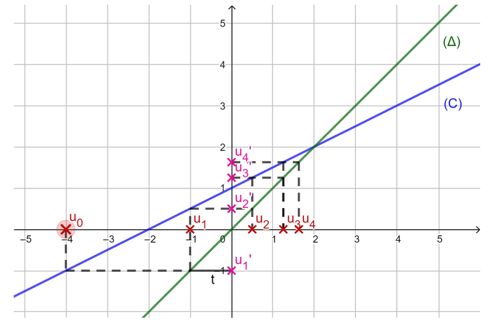
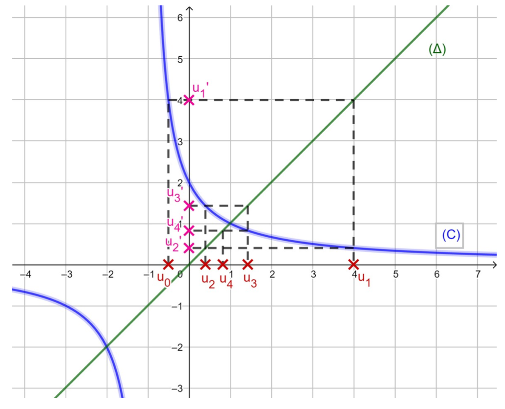
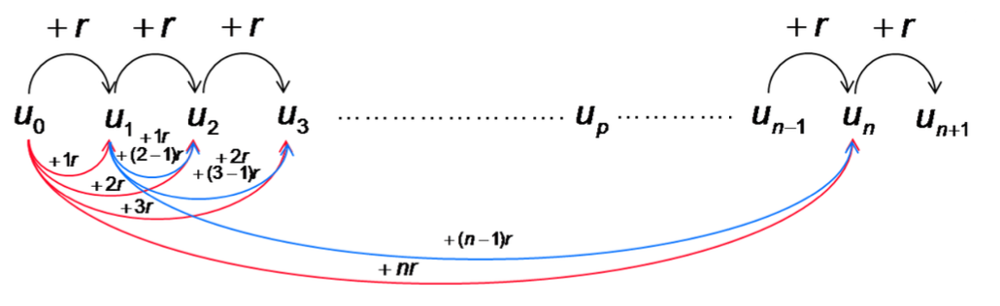
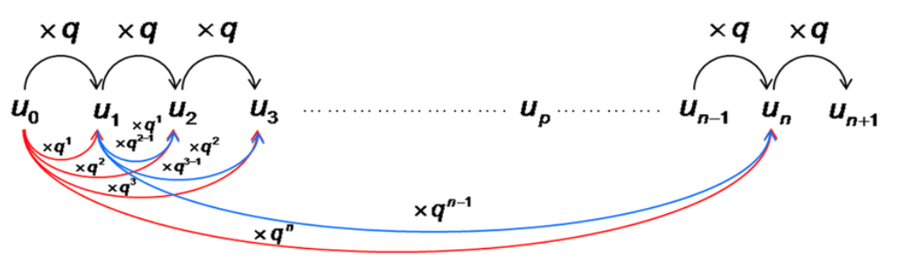
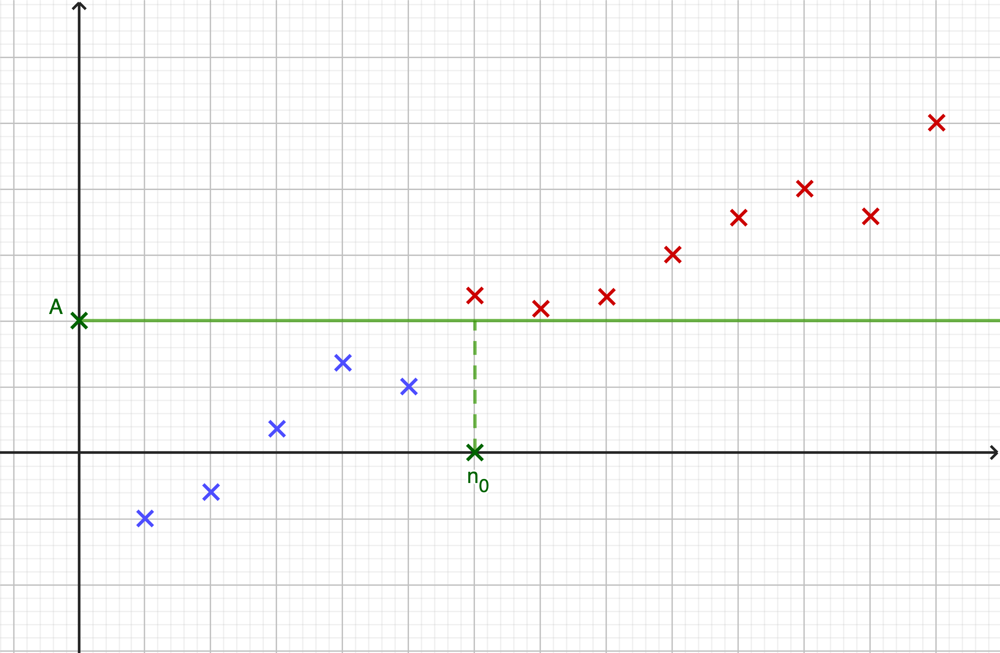
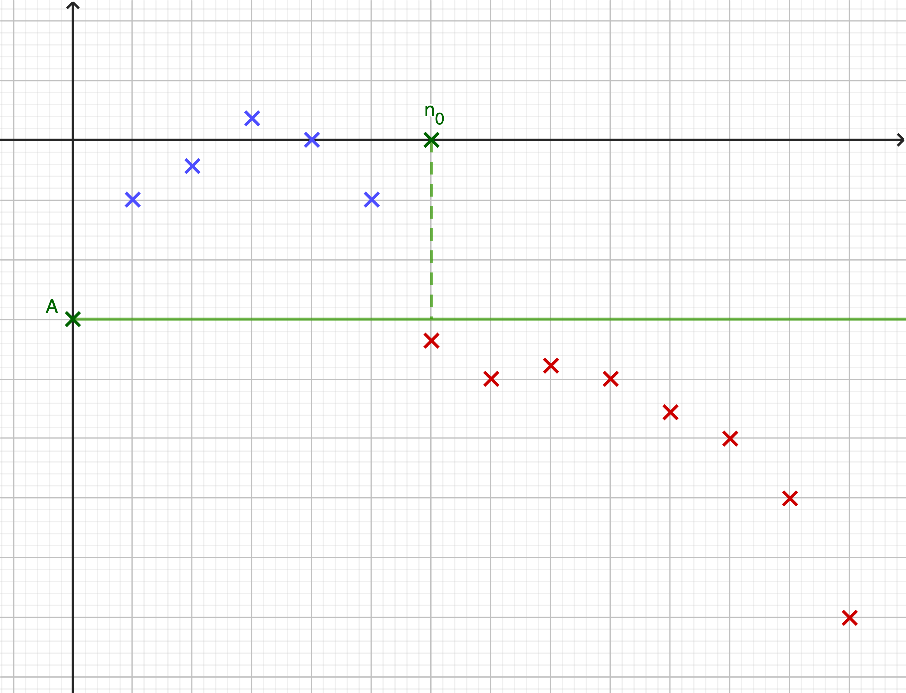
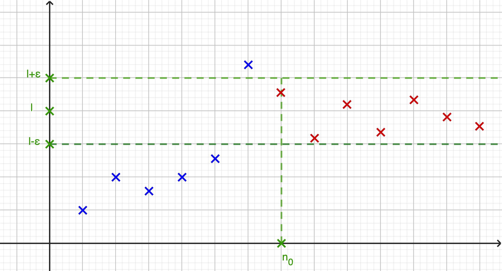
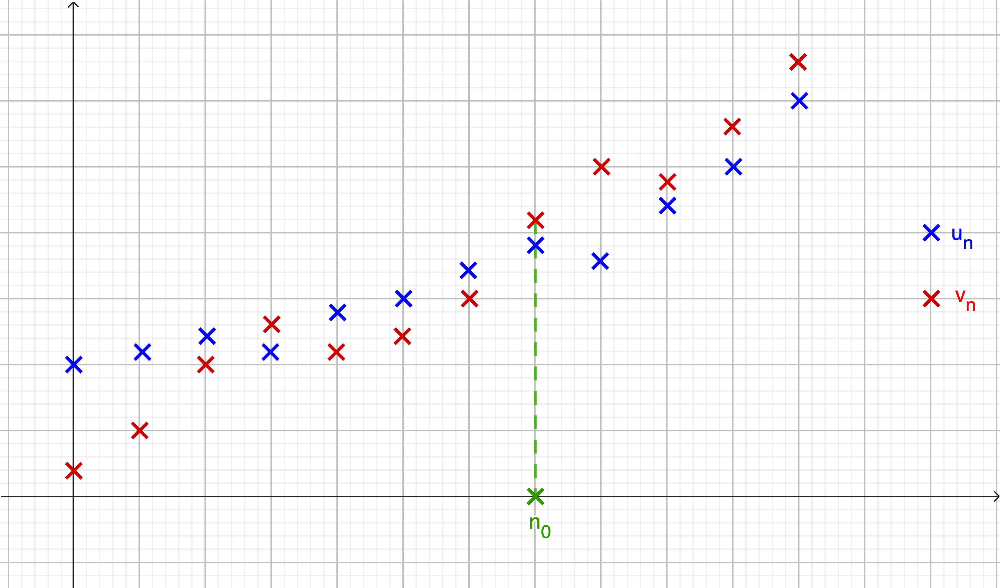
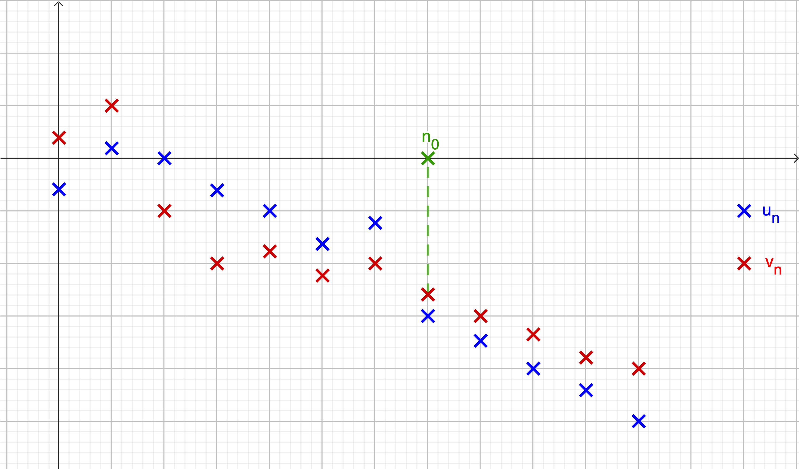
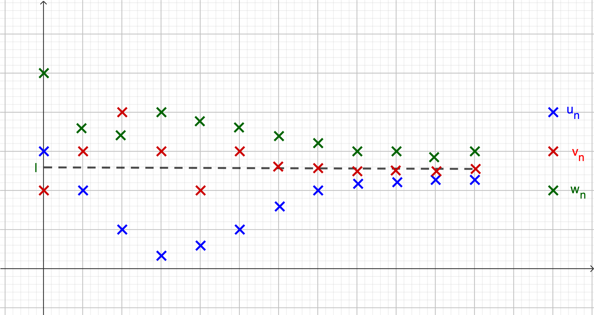

Suites numériques
1 Généralités sur les suites
1.1 Définition
Une suite u, notée aussi (u_n)_{n\in \N}, est une fonction définie sur \N ou une partie de \N et à valeurs dans \mathbb{R}.
u : \begin{cases}
\N & \to & \mathbb{R}\\
n & \mapsto & u(n)=u_n \\
\end{cases}
Les termes de la suite se notent u_0, u_1, ..., u_n.
u_n est le terme d’indice n ou terme général de la suite.
Soit u la suite définie sur \N par u_n=2n-1.
Le terme d’indice 0 (le premier terme !) est u_0=2 \times 0-1=-1.
Le terme d’indice 1 est u_1=2 \times 1-1=1.
1.2 Les différents modes de génération d’une suite
1.2.1 Suites définies à partir d’une fonction (mode explicite)
Une suite u est définie par une formule explicite lorsque u_n s’exprime en fonction de l’entier n. On note alors u_n=f(n) où f est une fonction.
La suite (u_n) définie sur \N par u_n=2n-1 est définie par l’expression du terme général en fonction de n. On peut alors définir la fonction associée f : x \mapsto 2x-1 et écrire u_n=f(n).
Dans ce cas, chaque terme peut alors se calculer indépendamment des autres en remplaçant n par sa valeur dans l’expression. On peut aussi utiliser le tableau de valeurs de la fonction associée.
Les suites (u_n), (v_n) et (w_n) définies sur \N par u_n=2n+1, v_n=2^n et w_n=n^3.
u_{100}=2\times100+1=201
v_5=2^5=32
w_{20}=20^3=8000
1.2.2 Suites définies par une relation de récurrence (mode récurrent)
Une suite u est définie par une relation de récurrence lorsqu’elle est définie par la donnée de :
son (ou ses) premier(s) terme(s);
une relation permettant de calculer un terme à partir d’un ou plusieurs termes précédents.
On note alors u_{n+1}=f(u_n) où f est une fonction.
Dans ce cas, chaque terme s’obtient de proche en proche. C’est pourquoi la connaissance du terme initial est indispensable.
Soit (u_n) la suite définie sur \N par \begin{cases}u_0 = -5 \\ u_{n+1} = 2u_n+3\end{cases} Ses premiers termes sont :
u_0=-5
u_1=2 \times u_0+3=-7
u_2=2 \times u_1+3=-11
1.3 Représentation graphique
Dans un repère, la représentation graphique d’une suite (u_n)_{n\in \N} est l’ensemble des points de coordonnées (n;u_n) pour n \in \N.
1.3.1 Suites définies à partir d’une fonction (mode explicite)
Soit (u_n)_{n \in \N} la suite définie par u_n=2n-1. On commence par remplir le tableau de valeurs :
| n | 0 | 1 | 2 | 3 | 4 | 5 |
|---|---|---|---|---|---|---|
| u_n | -1 | 1 | 3 | 5 | 7 | 9 |
On a alors ce nuage de points associé au tableau :

On peut définir la suite u à l’aide de sa fonction associée. Pour tout n\in \N, u_n=f(n) avec f(x)=2x-1. f est une fonction affine, sa représentation est donc une droite. Pour tracer la représentation de la suite, on trace les points de cette droite qui ont pour abscisse un entier naturel.
1.3.2 Suites définies par une relation de récurrence
On considère la suite u telle que u_{n+1}=f(u_n) où f est une fonction.
On construit de proche en proche les termes de la suite u en se servant de la courbe représentative de la fonction f appelée (C) et de la droite (\Delta) d’équation y=x :
placer u_0 sur l’axe des abscisses ;
construire u_1=f(u_0) sur l’axe des ordonnées ;
reporter u_1 sur l’axe des abscisses en utilisant (\Delta) ;
recommencer.
Soit (u_n) la suite définie sur \N par \begin{cases}u_0 = -4 \\ u_{n+1} = 1+\frac{1}{2}u_n\end{cases}
Construire les premiers termes de la suite (u_n) puis conjecturer les variations et la limite en +\infty.
Soit f la fonction définie sur [0;+\infty[ par f(x)=1+\frac{1}{2}x. Ainsi, f(u_n)=u_{n+1}.
(C) : y=\frac{1}{2}x+1
(\Delta) : y=x (appelée première bissectrice)

Grâce à cette représentation graphique, on peut conjecturer :
la suite (u_n) est strictement croissante sur \N
\lim\limits_{n \rightarrow +\infty} (u_n)=2
Ces conjectures doivent bien sûr être confirmées ou infirmées.
Soit (u_n) la suite définie sur \N par \begin{cases}u_0 = -\frac{1}{2} \\ u_{n+1} = \frac{2}{1+u_n}\end{cases}
Soit f la fonction définie sur [0;+\infty[ par f(x)=\frac{2}{1+x}. Ainsi, f(u_n)=u_{n+1}.
(C) : y=\frac{2}{1+x}
(\Delta) : y=x Grâce à cette représentation graphique, on peut conjecturer :
la suite (u_n) est non monotone sur \N
\lim\limits_{n \rightarrow +\infty} (u_n)=1

2 Sens de variation d’une suite
2.1 Définitions
Une suite (u_n)_{n\in \N} est croissante si pour tout n\in \N, u_{n+1} \ge u_n.
Une suite (u_n)_{n\in \N} est décroissante si pour tout n\in \N, u_{n+1} \le u_n.
Une suite (u_n)_{n\in \N} est constante si pour tout n\in \N, u_{n+1} = u_n.
Une suite (u_n)_{n\in \N} croissante ou décroissante est dite monotone.
On définit de même une suite strictement croissante (ou strictement décroissante) en utilisant une inégalité stricte.
2.2 Étude du sens de variation
Lorsqu’on cherche à déterminer les variations d’une suite (u_n)_{n\in \N} on peut :
étudier le signe de la différence u_{n+1}-u_n :
si u_{n+1}-u_n \ge 0 alors u_{n+1} \ge u_n et donc (u_n) est croissante.
si u_{n+1}-u_n \le 0 alors u_{n+1} \le u_n et donc (u_n) est décroissante.
si la suite est définie par u_n=f(n) où f est une fonction connue, étudier les variations de f sur [0;+\infty[ :
si f est croissante alors (u_n) est croissante.
si f est décroissante alors (u_n) est décroissante.
si la suite est toujours strictement positive, on peut comparer le quotient \frac{u_{n+1}}{u_n} à 1 :
si \frac{u_{n+1}}{u_n} \ge 1 alors (u_n) est croissante.
si \frac{u_{n+1}}{u_n} \le 1 alors (u_n) est décroissante.
Soit (u_n)_{n\in \N} la suite définie par u_n=\dfrac{n+1}{2^n}.
Soit (v_n)_{n\in \N} la suite définie par v_n=\dfrac{3}{n+2}.
Soit (w_n)_{n\in \N} la suite définie par w_n=\dfrac{3^n}{4^{n+2}}.
Soit (z_n)_{n\in \N} la suite définie par z_n=(-1)^n.
Soit (u_n)_{n\in \N} la suite définie par u_n=\dfrac{n+1}{2^n}.
u_{n+1}-u_n=\dfrac{n+2}{2^{n+1}}-\dfrac{n+1}{2^n}=\dfrac{n+2-2(n+1)}{2^{n+1}}=\dfrac{n+2-2n-2}{2^{n+1}}=\dfrac{-n}{2^{n+1}}
Comme 2^{n+1}>0 et -n \le 0, alors u_{n+1}-u_n \le 0
La suite (u_n)_{n\in \N} est donc décroissante sur \N.Soit (v_n)_{n\in \N} la suite définie par v_n=\dfrac{3}{n+2}.
Soit f la fonction associée à (v_n) définie sur [0;+\infty[ par f(x)=\dfrac{3}{x+2}.
La fonction f est dérivable sur \mathbb{R}^+ et f'(x)=-\dfrac{3}{(x+2)^2} < 0.
Ainsi la fonction f est décroissante sur \mathbb{R}^+, et donc la suite (v_n)_{n\in \N} est décroissante.Soit (w_n)_{n\in \N} la suite définie par w_n=\dfrac{3^n}{4^{n+2}}.
(w_n)_{n\in \N} est à termes strictement positifs.
\dfrac{w_{n+1}}{w_n}=\dfrac{\dfrac{3^{n+1}}{4^{n+3}}}{\dfrac{3^n}{4^{n+2}}}=\dfrac{3^{n+1}}{4^{n+3}}\times \dfrac{4^{n+2}}{3^n}=\dfrac{3^{n+1}}{3^n}\times \dfrac{4^{n+2}}{4^{n+3}}=3\times \dfrac{1}{4}=\dfrac{3}{4}
Ainsi, pour tout n entier naturel, on a \dfrac{w_{n+1}}{w_n}<1 donc la suite (w_n)_{n\in \N} est strictement décroissante.Soit (z_n)_{n\in \N} la suite définie par z_n=(-1)^n.
Les termes de la suite (z_n) valent alternativement 1 et -1.
Donc, cette suite n’est pas monotone.
3 Suites arithmétiques
3.1 Définition et expression du terme général
Une suite (u_n)_{n\in \N} est arithmétique s’il existe un réel r, appelé raison de la suite, tel que pour tout n\in \N, on a u_{n+1}=u_n+r.
Soit (u_n)_{n\in \N} une suite arithmétique de raison r.
Pour tout n\in \N, u_n=u_0+rn.
Pour tout n\in \N, et pour tout p\in \N, u_n=u_p+r(n-p).
Soit (u_n)_{n\in \N} une suite arithmétique de raison r.

Pour démontrer qu’une suite (u_n)_{n\in \N} est arithmétique, on peut :
montrer que, pour tout {n\in \N}, u_{n+1}-u_n est égal à une constante r ;
montrer que, pour tout {n\in \N}, u_n peut s’écrire sous la forme a \times n + b avec a et b deux réels.
Pour démontrer qu’une suite (u_n)_{n\in \N} n’est pas arithmétique, on peut calculer les premiers termes de la suite et comparer les différences de deux termes consécutifs.
Les suites suivantes sont-elles arithmétiques?
Soit (u_n)_{n\in \N} la suite définie par \begin{cases}u_0 = 1 \\ u_{n+1} = (u_n+1)^2-u_n^2-u_n\end{cases}
Soit (v_n)_{n\in \N} la suite définie par v_n=(n+1)^2-(n-2)^2.
Soit (w_n)_{n\in \N} la suite définie par \begin{cases}w_0 = 1 \\ w_{n+1} = \frac{w_n }{1+w_n}\end{cases}
Soit (u_n)_{n\in \N} la suite définie par \begin{cases}u_0 = 1 \\ u_{n+1} = (u_n+1)^2-u_n^2-u_n\end{cases}
Soit {n\in \N}, u_{n+1}-u_n=(u_n+1)^2-u_n^2-u_n-u_n=u_n^2+2u_n+1-u_n^2-2u_n=1
Donc la suite (u_n) est arithmétique de raison r=1.Soit (v_n)_{n\in \N} la suite définie par v_n=(n+1)^2-(n-2)^2.
Soit {n\in \N}, v_n=n^2+2n+1-(n^2-4n+4)=6n-3
Donc la suite (v_n) est arithmétique de raison r=6 et de premier terme v_0=-3.Soit (w_n)_{n\in \N} la suite définie par \begin{cases}w_0 = 1 \\ w_{n+1} = \frac{w_n }{1+w_n}\end{cases}
w_0=1, w_1=\frac{1}{2} et w_2=\frac{1}{3}
w_1-w_0=-\frac{1}{2} et w_2-w_1=-\frac{1}{6}
Donc w_1-w_0\ne w_2-w_1
Ainsi, la suite (w_n) n’est pas arithmétique.
3.2 Sens de variation
Soit (u_n)_{n\in \N} une suite arithmétique de raison r.
Si r>0, alors la suite est strictement croissante ;
Si r<0, alors la suite est strictement décroissante ;
Si r=0, alors la suite est constante.
Soit (u_n)_{n\in \N} une suite arithmétique de raison r.
Pour tout {n\in \N}, u_{n+1}-u_n=r
Si r>0, alors u_{n+1}-u_n>0 et donc la suite est strictement croissante ;
Si r<0, alors u_{n+1}-u_n<0 et donc la suite est strictement décroissante ;
Si r=0, alors u_{n+1}-u_n=0 et donc la suite est constante.
Soit (u_n)_{n\in \N} la suite définie par u_{n+1}=3+u_n
La suite est arithmétique de raison r=3>0.
Donc la suite (u_n) est strictement croissante.Soit (v_n)_{n\in \N} la suite définie par v_{n+1}+2=v_n.
La suite est arithmétique de raison r=-2<0.
Donc la suite (v_n) est strictement décroissante.
3.3 Somme des premiers entiers
Pour tout n\in \N^*, \displaystyle\sum_{i=1}^n i=1+2+3+...+n=\frac{n(n+1)}{2}
Méthode de Gauss (mathématicien allemand des XVIIIe-XIXe siècles)
On écrit la somme dans l’ordre croissant des termes puis dans l’ordre décroissant des termes :
S=1+2+3+...+(n-2)+(n-1)+n
S=n+(n-1)+(n-2)+...+3+2+1
Par somme, membre à membre, on obtient :
2S=(1+n)+(1+n)+(1+n)+...+(1+n)+(1+n)+(1+n)
2S=n(n+1)
Donc S=\frac{n(n+1)}{2}
Calculer la somme S=2+5+8+11+14+...+296.
On considère la somme S=2+5+8+11+14+...+296.
On pose (u_n)_{n\in \N} :
\begin{cases}u_0 = 2 \\ u_{n+1} = u_n+3\end{cases}
S est la somme des 99 premiers termes de la suite (u_n).
S=u_0+u_1+u_2+u_3+...+u_{98}
S=u_0+(u_0+3)+(u_0+2\times3)+(u_0+3 \times 3)+...+(u_0+98 \times 3) On exprime chaque terme u_n en fonction de n
S=99u_0+3(1+2+3+...+98) On regroupe les termes u_0 et on factorise par le facteur commun (la raison)
S=99 \times 2+3\times \frac{98 \times 99}{2} On applique la formule de Gauss
S=14751
4 Suites géométriques
4.1 Définition et expression du terme général
Une suite (u_n)_{n\in \N} est géométrique s’il existe un réel q, appelé raison de la suite, tel que pour tout n\in \N, on a u_{n+1}=q \times u_n.
Soit (u_n)_{n\in \N} une suite géométrique de raison q.
Pour tout n\in \N, u_n=u_0\times q^n.
Pour tout n\in \N, et pour tout p\in \N, u_n=u_p\times q^{n-p}.
Soit (u_n)_{n\in \N} une suite géométrique de raison q.

Pour démontrer qu’une suite (u_n)_{n\in \N} est géométrique, on peut :
montrer que, pour tout {n\in \N}, u_{n+1}=q \times u_n ;
montrer que, pour tout {n\in \N}, \frac{u_{n+1}}{u_n} est égal à une constante q si tous les termes de la suite sont non nuls ;
montrer que, pour tout {n\in \N}, u_n peut s’écrire sous la forme a\times b^n avec a et b des réels.
Pour démontrer qu’une suite (u_n)_{n\in \N} n’est pas géométrique, on peut calculer les premiers termes de la suite et comparer les quotients de deux termes consécutifs.
Les suites suivantes sont-elles géométriques?
Soit (u_n)_{n\in \N} la suite définie par u_0=2 et u_{n+1}=\frac{u_n}{2}
Soit (v_n)_{n\in \N} la suite définie par v_n=\frac{1}{4^n}.
Soit (w_n)_{n\in \N} la suite définie par w_n=\frac{1}{n+1}
Soit (u_n)_{n\in \N} la suite définie par u_0=2 et u_{n+1}=\frac{u_n}{2}
Soit {n\in \N}, u_{n+1}=u_n \times \frac{1}{2}
Donc la suite (u_n) est géométrique de raison q=\frac{1}{2}.Soit (v_n)_{n\in \N} la suite définie par v_n=\frac{1}{4^n}.
Soit {n\in \N}, v_n \ne 0 et \frac{v_{n+1}}{v_n}=\frac{\frac{1}{4^{n+1}}}{\frac{1}{4^n}}=\frac{1}{4^{n+1}} \times \frac{4^n}{1}=\frac{1}{4}
Donc la suite (v_n) est géométrique de raison q=\frac{1}{4}.Soit (w_n)_{n\in \N} la suite définie par w_n=\frac{1}{n+1}
w_0=1, w_1=\frac{1}{2} et w_2=\frac{1}{3}
\frac{w_1}{w_0}=\frac{1}{2} et \frac{w_2}{w_1}=\frac{2}{3}
Donc \frac{w_1}{w_0}\ne \frac{w_2}{w_1}
Ainsi, la suite (w_n) n’est pas géométrique.
4.2 Sens de variation
Soit (u_n)_{n\in \N} une suite géométrique de raison q et de premier terme u_0 \ne 0.
Si q>1 :
si u_0>0, alors la suite est strictement croissante ;
si u_0<0, alors la suite est strictement décroissante.
Si 0<q<1 :
si u_0>0, alors la suite est strictement décroissante ;
si u_0<0, alors la suite est strictement croissante.
Si q=0 ou q=1, alors la suite est constante.
Si q<0, alors la suite n’est pas monotone.
Soit n\in \N, u_{n+1}-u_n=u_0 \times q^{n+1}-u_0 \times q^n=u_0 \times q^n(q-1)
Si q>1, alors q-1>0 et q^n>0 :
si u_0>0, alors u_{n+1}-u_n>0 et donc la suite est strictement croissante ;
si u_0<0, alors u_{n+1}-u_n<0 et donc la suite est strictement décroissante.
Si 0<q<1, alors q-1<0 et q^n>0 :
si u_0>0, alors u_{n+1}-u_n<0 et donc la suite est strictement décroissante ;
si u_0<0, alors u_{n+1}-u_n>0 et donc la suite est strictement croissante.
Si q=0 ou q=1, alors u_{n+1}-u_n=0 et donc la suite est constante.
Si q<0, alors les termes de la suite sont alternativement positifs et négatifs et donc la suite n’est pas monotone.
Étudier la monotonie des suites suivantes :
Soit (u_n)_{n\in \N} la suite définie par u_0=2 et u_{n+1}=2{u_n}
Soit (v_n)_{n\in \N} la suite définie par v_0=-5 et v_{n+1}=0,5v_n.
Soit (u_n)_{n\in \N} la suite définie par u_0=2 et u_{n+1}=2{u_n}
La suite (u_n) est géométrique de raison q=2>1 et de premier terme u_0=2>0.
Donc la suite (u_n) est croissante.Soit (v_n)_{n\in \N} la suite définie par v_0=-5 et v_{n+1}=0,5v_n.
La suite (v_n) est géométrique de raison q=0,5 \in ]0;1[ et de premier terme v_0=-5<0.
Donc la suite (v_n) est croissante.
4.3 Somme des premières puissances
Pour tout réel q \ne 1 et pour tout n\in \N^*, \displaystyle\sum_{i=0}^n q^i=1+q+q^2+...+q^n=\frac{1-q^{n+1}}{1-q}
S=1+q+q^2+...+q^n
qS=q+q^2+q^3+...+q^{n+1}
On soustrait les deux égalités, membre à membre et on obtient :
S-qS=1+q+q^2+...+q^n-q-q^2-q^3-...-q^{n+1}
Donc S-qS=1-q^{n+1}
Comme q \ne 1 alors S=\frac{1-q^{n+1}}{1-q}
Calculer la somme S=4-8+16-32+64-...+4096-8192.
S=(-2)^2+(-2)^3+(-2)^4+(-2)^5+(-2)^6+...+(-2)^{12}+(-2)^{13}
S=(-2)^2(1+(-2)+(-2)^2+(-2)^3+(-2)^4+...+(-2)^{11})
S=4 \times \frac{1-(-2)^{12}}{1-(-2)}
S=-5460
On peut aussi poser (u_n)_{n\in \N} :
\begin{cases}u_0 = 4 \\ u_{n+1} = -2u_n\end{cases} et S est alors la somme des 12 premiers termes de la suite (u_n).
5 Raisonnement par récurrence
Le raisonnement par récurrence ne peut s’utiliser que lorsqu’on cherche à démontrer qu’une propriété est vraie pour tout entier naturel n supérieur ou égal à un entier naturel n_0.
Notons P_n cette propriété.
La démonstration s’opère en 3 étapes:
Étape 1 : Initialisation
On démontre que P_n est vraie au premier rang (en général n=0 ou n=1).
Étape 2 : Hérédité
On suppose que la propriété est vraie pour un certain rang k, et on montre que dans ce cas, la propriété reste vraie au rang suivant. Autrement dit, on suppose que P_k est vraie et on montre que P_{k+1} est vraie.Étape 3 : Conclusion
Si P_0 est vraie, grâce à l’hérédité P_1 est vraie et donc P_2 aussi ...
Donc, \forall n \in \N, P_n vraie.
La rigueur de rédaction de la démonstration par récurrence est très importante.
Redémontrer la formule de Gauss: \forall n \in \N^*, S_n=1+2+3+...+n=\frac{n(n+1)}{2}
Soit n\in \N^*. On note P_n : "S_n=1+2+3+...+n=\frac{n(n+1)}{2}"
Initialisation:
S_1=1 et \frac{1(1+1)}{2}=1
Ainsi, P_1 est vraie.Soit k\in \N^* tel que P_k est vraie.
\begin{aligned} S_{k+1}&=S_k+(k+1) \\ &=\dfrac{k(k+1)}{2}+(k+1) \\ &=\dfrac{k(k+1)+2(k+1)}{2} \\ &= \dfrac{(k+1)(k+2)}{2} \end{aligned} Ainsi la propriété P_{k+1} est vraie.Conclusion:
P_1 est vraie.
\forall k \in \N^*, P_k\Rightarrow P_{k+1}
Donc, \forall n \in \N^*, S_n=1+2+3+...+n=\frac{n(n+1)}{2}.
6 Limites des suites
6.1 Limites infinies
Définition “intuitive” de la limite infinie d’une suite:
On dit qu’une suite (u_n) tend vers +\infty lorsque, pour tout réel A, l’intervalle ]A;+\infty[ contient tous les termes de la suite à partir d’un certain rang. On note \lim\limits_{n \to +\infty} u_n=+\infty .
On dit qu’une suite (u_n) tend vers -\infty lorsque, pour tout réel A, l’intervalle ]-\infty;A[ contient tous les termes de la suite à partir d’un certain rang. On note \lim\limits_{n \to +\infty} u_n=-\infty .
On dit aussi que (u_n) diverge vers +\infty ou -\infty.

La suite (u_n) représentée ci-dessus semble avoir pour limite +\infty. En effet, pour tout réel A choisi, il existe un rang n_0 à partir duquel tous les termes de la suite sont supérieurs à A.

La suite (u_n) représentée ci-dessus semble avoir pour limite -\infty. En effet, pour tout réel A choisi, il existe un rang n_0 à partir duquel tous les termes de la suite sont inférieurs à A.
Définition formelle de la limite infinie d’une suite: Soit (u_n) une suite.
On dit que (u_n) diverge vers +\infty lorsque:
\forall A \in \mathbb{R},~\exists n_0 \in \N,~\forall n \in \N,~ n\geq n_0 \Rightarrow u_n \geq AOn dit que (u_n) diverge vers -\infty lorsque:
\forall A \in \mathbb{R},~\exists n_0 \in \N,~\forall n \in \N,~ n\geq n_0 \Rightarrow u_n \leq A
En pratique, pour montrer, à l’aide de la définition, qu’une suite tend vers +\infty (resp. -\infty), on considère un réel positif (resp. négatif) A, et on cherche un rang à partir duquel tous les termes de la suite sont supérieurs (resp. inférieurs) à A.
Soit (u_n)_{n\in \N} la suite définie par u_n=4n-1. Montrer que \lim\limits_{n \to +\infty} u_n=+\infty.
Soit A \in \mathbb{R}^{+*},
\begin{aligned}
u_n>A &\Leftrightarrow 4n-1>A \\
&\Leftrightarrow 4n>A+1 \\
&\Leftrightarrow n>\frac{A+1}{4} \text{ car } 4>0
\end{aligned} Soit n_0 l’entier immédiatement supérieur à \frac{A+1}{4}. Ainsi on a bien: \forall n \geq n_0,~u_n\geq A
Donc, \lim\limits_{n \to +\infty} u_n=+\infty
Limites en l’infini des suites de référence:
\lim\limits_{n \to +\infty} n=+\infty
\lim\limits_{n \to +\infty} \sqrt{n}=+\infty
\forall k \in \N^*, \lim\limits_{n \to +\infty} n^k=+\infty
Soit A \in \mathbb{R}^{+*},
Soit (u_n)_{n\in \N} définie par u_n=n.
u_n>A \Leftrightarrow n>A
Ainsi, en prenant comme valeur de n_0 le plus petit entier supérieur à A, on a bien :
Pour tout réel A, il existe une valeur n_0 telle que n \ge n_0 \Rightarrow u_n>A.
Donc, \lim\limits_{n \to +\infty} u_n=+\infty .Soit (u_n)_{n\in \N} définie par u_n=\sqrt{n}.
u_n>A \Leftrightarrow \sqrt{n}>A>0 \Leftrightarrow n >A^2
Ainsi, en prenant comme valeur de n_0 le plus petit entier supérieur à A^2, on a bien :
Pour tout réel A, il existe une valeur n_0 telle que n \ge n_0 \Rightarrow u_n>A.
Donc, \lim\limits_{n \to +\infty} u_n=+\infty .Cette propriété est admise pour le moment mais pourra être démontrée avec les opérations sur les limites.
Suite majorée, minorée, bornée:
Une suite (u_n) est majorée par un réel M lorsque, pour tout entier naturel n, u_n\le M. On dit que M est un majorant de (u_n).
Une suite (u_n) est minorée par un réel m lorsque, pour tout entier naturel n, u_n\ge m. On dit que m est un minorant de (u_n).
Une suite (u_n) est bornée lorsqu’elle est à la fois majorée et minorée.
Une suite majorée (resp. minorée) possède une infinité de majorants (resp. minorants).
Suite monotone non bornée
Toute suite croissante non majorée a pour limite +\infty quand n tend vers +\infty.
Toute suite décroissante non minorée a pour limite -\infty quand n tend vers +\infty.
Soit A un réel positif. Soit (u_n)_{n\in \N} une suite croissante non majorée.
Comme (u_n) est non majorée, alors il existe un entier n_0 tel que u_{n_0} > A.
Comme (u_n) est croissante, alors pour tout entier naturel n \ge {n_0}, u_n \ge u_{n_0}.
Donc, pour tout entier n \ge {n_0}, u_n \ge u_{n_0} > A.
Ainsi, \lim\limits_{n \to +\infty} u_n=+\infty
Le deuxième point de la proposition se démontre de manière analogue.
6.2 Limites finies
Définition “intuitive” de la limite finie d’une suite: On dit qu’une suite (u_n) tend vers un réel \ell lorsque tout intervalle ouvert contenant \ell contient tous les termes de la suite à partir d’un certain rang.
On note \lim\limits_{n \to +\infty} u_n=\ell.
Définition formelle de la limite finie d’une suite: On dit qu’une suite (u_n) tend vers un réel \ell lorsque:
\forall \varepsilon>0,~\exists n_0 \in \N,~\forall n \in \N,~n\geq n_0 \Rightarrow u_n\in ]\ell -\varepsilon;\ell+\varepsilon[
On dit que (u_n) est convergente ou encore que (u_n) converge vers \ell.
La suite (u_n) représentée ci-contre semble avoir pour limite \ell. En effet, pour tout réel \varepsilon>0, il existe un rang n_0 à partir duquel tous les termes de la suite sont dans l’intervalle ]\ell-\varepsilon;\ell+\varepsilon[.

Soit (u_n)_{n\in \N^*} la suite définie par u_n=2-\frac{1}{n}. Montrer que \lim\limits_{n \to +\infty} u_n=2.
Soit \varepsilon \in \mathbb{R}^{+*}, \begin{aligned}
u_n \in ]2-\varepsilon;2+\varepsilon[ &\Leftrightarrow 2-\varepsilon < 2-\frac{1}{n} < 2+\varepsilon \\
&\Leftrightarrow -\varepsilon < -\frac{1}{n} < \varepsilon \\
&\Leftrightarrow \varepsilon > \frac{1}{n} > -\varepsilon \text{ car } -1<0 \\
&\Leftrightarrow \varepsilon > \frac{1}{n} \text{ car } \forall n \in \N \frac{1}{n} > -\varepsilon \\
&\Leftrightarrow \frac{1}{\varepsilon} < n \text{ car la fonction inverse est strictement décroissante sur } ]0;+\infty[
\end{aligned} Soit n_0 l’entier immédiatement supérieur à \frac{1}{\varepsilon}.
Ainsi on a bien \forall n \in \N,~ n \ge n_0 \Rightarrow u_n \in ]2-\varepsilon;2+\varepsilon[
Donc, \lim\limits_{n \to +\infty} u_n=2.
Limite des suites de références:
\lim\limits_{n \to +\infty} \frac{1}{n}=0
\lim\limits_{n \to +\infty} \frac{1}{\sqrt{n}}=0
Pour tout k \in \N^*, \lim\limits_{n \to +\infty} \frac{1}{n^k}=0
Soit \varepsilon \in \mathbb{R}^{+*},
Soit (u_n)_{n\in \N^*} la suite définie par u_n=\frac{1}{n}.
u_n \in ]-\varepsilon;\varepsilon[ \Leftrightarrow -\varepsilon < \frac{1}{n} < \varepsilon \Leftrightarrow \frac{1}{n} < \varepsilon car l’inégalité \frac{1}{n} > -\varepsilon est toujours vraie
\Leftrightarrow n > \frac{1}{\varepsilon} car la fonction inverse est strictement décroissante sur ]0;+\infty[
Ainsi, en prenant comme valeur de n_0 le plus petit entier supérieur à \frac{1}{\varepsilon}, on a bien :
Pour tout réel \varepsilon>0, il existe une valeur n_0 telle que n \ge n_0 \Rightarrow u_n \in ]-\varepsilon;\varepsilon[. Donc, \lim\limits_{n \to +\infty} \frac{1}{n}=0Soit (u_n)_{n\in \N^*} la suite définie par u_n=\frac{1}{\sqrt{n}}.
u_n \in ]-\varepsilon;\varepsilon[ \Leftrightarrow -\varepsilon < \frac{1}{\sqrt{n}} < \varepsilon \Leftrightarrow \frac{1}{\sqrt{n}} < \varepsilon car l’inégalité \frac{1}{\sqrt{n}} > -\varepsilon est toujours vraie
\Leftrightarrow \sqrt{n} > \frac{1}{\varepsilon} car la fonction inverse est strictement décroissante sur ]0;+\infty[
\Leftrightarrow n > \frac{1}{\varepsilon^2} car la fonction carrée est strictement croissante sur [0;+\infty[
Ainsi, en prenant comme valeur de n_0 le plus petit entier supérieur à \frac{1}{\varepsilon^2}, on a bien :
Pour tout réel \varepsilon>0, il existe une valeur n_0 telle que n \ge n_0 \Rightarrow u_n \in ]-\varepsilon;\varepsilon[. Donc, \lim\limits_{n \to +\infty} \frac{1}{\sqrt{n}}=0Cette propriété est admise pour le moment mais pourra être démontrée avec les opérations sur les limites.
Une suite divergente est une suite qui ne converge pas.
Elle peut diverger vers +\infty ou -\infty ou ne pas avoir de limite (par exemple, la suite (u_n)_{n\in \N} définie par u_n=(-1)^n n’a pas de limite et prend alternativement les valeurs -1 et 1).
Unicité de la limite: Si une suite (u_n) a pour limite le réel \ell, alors cette limite est unique.
La démonstration sera par l’absurde. Supposons donc au contraire que cette suite admette deux limites l et l' différentes. Supposons, sans perte de généralité que l<l'. Posons h=\dfrac{l'-l}{3}.
La suite converge vers l donc il existe un entier A tel que:
\forall n>A,~u_n\in ]l-h;l+h[
La suite converge vers l' donc il existe un entier B tel que:
\forall n>B,~u_n\in ]l'-h;l'+h[
Soit C=\max(A;B). Alors:
\forall n>C,~u_n\in ]l-h;l+h[ \cap ]l'-h;l'+h[
Il y a ici une absurdité puisque les intervalles ]l-h;l+h[ et ]l'-h;l'+h[ sont disjoints.
En effet on peut vérifier que l'-h>l+h: \begin{aligned} l'-h-(l+h)&=l'-h-l-h \\ &=l'-l-2h \\ &=l'-l-\dfrac{2l'-2l}{3} \\ &=\dfrac{3l'-3l-2l'+2l}{3} \\ &=\dfrac{l'-l}{3}\\ &>0 \end{aligned}
Théorème de convergence des suites monotones:
Une suite croissante majorée converge.
Une suite décroissante minorée converge.
Ce théorème permet de justifier qu’une suite converge mais il ne permet pas de déterminer sa limite.
Soit (u_n)_{n\in \N} la suite définie par u_0=0,7 et u_{n+1}=0,92u_n+0,3.
Montrer que, pour tout entier naturel n, u_n\le u_{n+1} \le 4.
Montrer que (u_n) converge vers un réel \ell.
On admet (pour le moment) que \ell est solution de l’équation x=0,92x+0,3. Déterminer la valeur de \ell. (voir le résultat sur le théorème du point fixe).
Soit n \in \N, P_n:" u_n\le u_{n+1} \le 4".
Initialisation :
u_0=0,7 et u_1=0,92 \times 0,7 + 0,3= 0,944
donc u_0 \le u_1 \le 4
Ainsi, P_0 est vraie.
Hérédité :
Soit k\in \N tel que P_k vraie.
u_k\le u_{k+1} \le 4
\Leftrightarrow 0,92u_k \le 0,92u_{k+1} \le 3,68 car 0,92>0
\Leftrightarrow 0,92u_k +0,3\le 0,92u_{k+1} +0,3\le 3,98
\Rightarrow u_{k+1} \le u_{k+2} \le 3,98 <4
Ainsi, P_{k+1} est vraie.Conclusion :
P_0 est vraie.
\forall k \in \N, P_k\Rightarrow P_{k+1}.
Donc, \forall n \in \N, u_n\le u_{n+1} \le 4.
On a montré que la suite (u_n) est croissante et majorée. D’après le théorème de convergence des suites monotones, (u_n) converge.
x=0,92x+0,3 \Leftrightarrow 0,08x=0,3 \Leftrightarrow x=\frac{0,3}{0,08} \Leftrightarrow x=3,75
Ainsi, \ell=3,75.
6.3 Opérations sur les limites
6.3.1 Somme
| \lim\limits_{n \to +\infty} u_n | \ell | \ell | \ell | +\infty | +\infty | -\infty |
|---|---|---|---|---|---|---|
| \lim\limits_{n \to +\infty} v_n | \ell' | +\infty | -\infty | +\infty | -\infty | -\infty |
| \lim\limits_{n \to +\infty} (u_n+v_n) | \ell+\ell' | +\infty | -\infty | +\infty | FI | -\infty |
6.3.2 Produit
| \lim\limits_{n \to +\infty} u_n | \ell | \ell \ne 0 | \infty | 0 |
|---|---|---|---|---|
| \lim\limits_{n \to +\infty} v_n | \ell' | \infty | \infty | \infty |
| \lim\limits_{n \to +\infty} (u_n \times v_n) | \ell \times \ell' | \infty | \infty | FI |
6.3.3 Quotient
| \lim\limits_{n \to +\infty} u_n | \ell | \ell | \ell \ne 0 | \infty | \infty | 0 |
|---|---|---|---|---|---|---|
| \lim\limits_{n \to +\infty} v_n | \ell' \ne 0 | \infty | 0 | \ell' | \infty | 0 |
| \lim\limits_{n \to +\infty} (\frac{u_n}{v_n}) | \frac{\ell}{\ell'} | 0 | \infty | \infty | FI | FI |
6.3.4 Applications
Ces règles opératoires sur les limites sont “naturelles”. Il convient de faire attention aux quatre formes indéterminées qui sont, en utilisant un abus d’écriture : “\infty - \infty”, “0 \times \infty”, “\frac{\infty}{\infty}” et “\frac{0}{0}”. Pour lever une indétermination, on transforme l’écriture de l’expression étudiée pour se ramener aux cas généraux.
Dans le cas où la limite du produit ou du quotient est infinie, on utilise la règle des signes pour conclure entre +\infty et -\infty.
Soient (u_n)_{n\in \N^*}, (v_n)_{n\in \N}, (w_n)_{n\in \N} et (z_n)_{n\in \N^*} les suites définies par u_n=n^2+\frac{1}{n}, v_n=-5 \sqrt{n}-n^3, w_n=\frac{2}{3n+5} et z_n=\frac{-3}{\frac{1}{n^2}}. Étudier les limites de ces suites en +\infty.
\lim\limits_{n \to +\infty} n^2=+\infty et \lim\limits_{n \to +\infty} \frac{1}{n}=0 donc, par somme, \lim\limits_{n \to +\infty} u_n=+\infty
\lim\limits_{n \to +\infty} \sqrt{n}=+\infty donc, par produit, \lim\limits_{n \to +\infty} -5\sqrt{n}=-\infty
et \lim\limits_{n \to +\infty} {n^3}=+\infty donc, par produit, \lim\limits_{n \to +\infty} {-n^3}=-\infty
donc, par somme, \lim\limits_{n \to +\infty} v_n=-\infty\lim\limits_{n \to +\infty} {n}=+\infty donc, par produit et par somme, \lim\limits_{n \to +\infty} (3n+5)=+\infty
donc, par quotient, \lim\limits_{n \to +\infty} w_n=0\lim\limits_{n \to +\infty} \frac{1}{n^2}=0^+ donc, par quotient, \lim\limits_{n \to +\infty} z_n=-\infty
On peut aussi modifier l’écriture de z_n pour déterminer autrement sa limite : z_n=-3n^2.
\lim\limits_{n \to +\infty} u_n=0^+ (resp. 0^-) signifie que \lim\limits_{n \to +\infty} u_n=0 et que u_n>0 (resp. u_n<0) à partir d’un certain rang.
Soient (u_n)_{n\in \N}, (v_n)_{n\in \N}, (w_n)_{n\in \N} et (z_n)_{n\in \N^*} les suites définies par u_n=n^2-n, v_n=\frac{4n^2}{n+1}, w_n=\sqrt{n+1}-\sqrt{n} et z_n=\frac{1}{n}(n^2-2). Étudier les limites de ces suites en +\infty.
Dans ces 4 exemples, on est face à des formes indéterminées.
Pour lever cette indétermination, on factorise l’expression : Soit {n\in \N}, u_n=n(n-1)
\lim\limits_{n \to +\infty} n=+\infty et, par somme, \lim\limits_{n \to +\infty} (n-1)=+\infty
donc, par produit, \lim\limits_{n \to +\infty} u_n=+\inftyPour lever cette indétermination, on factorise le numérateur et le dénominateur par le monôme de plus haut degré puis on simplifie : Soit {n\in \N^*}, v_n=\frac{n^2\times 4}{n(1+\frac{1}{n})}=\frac{4n}{1+\frac{1}{n}}
\lim\limits_{n \to +\infty} n=+\infty donc, par produit, \lim\limits_{n \to +\infty} 4n=+\infty
et \lim\limits_{n \to +\infty} \frac{1}{n}=0 donc, par somme, \lim\limits_{n \to +\infty} (1+\frac{1}{n})=1
donc, par quotient, \lim\limits_{n \to +\infty} v_n=+\inftyPour lever cette indétermination, on utilise l’expression conjuguée :
Soit {n\in \N}, w_n=\frac{(\sqrt{n+1}-\sqrt{n})(\sqrt{n+1}+\sqrt{n})}{\sqrt{n+1}+\sqrt{n}}=\frac{n+1-n}{\sqrt{n+1}+\sqrt{n}}=\frac{1}{\sqrt{n+1}+\sqrt{n}}
\lim\limits_{n \to +\infty} \sqrt{n}=+\infty et par composition, \lim\limits_{n \to +\infty} \sqrt{n+1}=+\infty
donc, par somme \lim\limits_{n \to +\infty} (\sqrt{n+1}+\sqrt{n})=+\infty
donc, par quotient, \lim\limits_{n \to +\infty} w_n=0Pour lever cette indétermination, on développe et on simplifie l’expression : Soit {n\in \N^*}, z_n=n-\frac{2}{n}
\lim\limits_{n \to +\infty} n=+\infty et \lim\limits_{n \to +\infty} \frac{2}{n}=0
donc, par somme, \lim\limits_{n \to +\infty} z_n=+\infty
6.4 Limites et comparaison
6.4.1 Théorème de comparaison
Théorème de comparaison Soient (u_n)_{n\in \N}, (v_n)_{n\in \N} deux suites telles que u_n \le v_n à partir d’un certain rang.
Si \lim\limits_{n \to +\infty} u_n=+\infty alors \lim\limits_{n \to +\infty} v_n=+\infty.
Si \lim\limits_{n \to +\infty} v_n=-\infty alors \lim\limits_{n \to +\infty} u_n=-\infty.


Soit A \in \mathbb{R}^{+*},
Par hypothèse, il existe un rang n_0 tel que, pour tout n \ge n_0, u_n \le v_n.
De plus, comme \lim\limits_{n \to +\infty} u_n=+\infty alors il existe n_p \in \N tel que, pour tout n \ge n_p, u_n>A.
Ainsi, pour tout entier n tel que n \ge n_0 et n \ge n_p, v_n \ge u_n>A
En choisissant N=\max(n_0;n_p), on obtient que : pour tout n \ge N, v_n>A. Donc, \lim\limits_{n \to +\infty} v_n=+\infty.On démontre le second point de manière analogue.
Soient (u_n)_{n\in \N} et (v_n)_{n\in \N} les suites définies par u_n=n+2\sin(n), v_n=-n^2-n+(-1)^n. Déterminer les limites de ces suites en +\infty.
On ne peut pas déterminer directement la limite de la suite (u_n) car la suite (\sin(n)) n’a pas de limite.
Soit n\in \N, -1 \le \sin(n) \le 1 \Leftrightarrow -2 \le 2\sin(n) \le 2 \Leftrightarrow n-2 \le n+2\sin(n) \le n+2
Or, par somme, \lim\limits_{n \to +\infty} (n-2)=+\infty
D’après le théorème de comparaison : \lim\limits_{n \to +\infty} u_n=+\infty.On ne peut pas déterminer directement la limite de la suite (v_n) car la suite ((-1)^n) n’a pas de limite.
Soit n\in \N, -1 \le (-1)^n \le 1 \Leftrightarrow -n^2-n-1 \le -n^2-n+(-1)^n \le -n^2-n+1
Or, par somme, \lim\limits_{n \to +\infty} (-n^2-n+1)=-\infty
D’après le théorème de comparaison : \lim\limits_{n \to +\infty} v_n=-\infty.
6.4.2 Théorème des gendarmes
Théorème des gendarmes (ou d’encadrement) Soient (u_n)_{n\in \N}, (v_n)_{n\in \N} et (w_n)_{n\in \N} trois suites telles que u_n \le v_n \le w_n à partir d’un certain rang. Soit \ell un réel.
Si (u_n) et (w_n) convergent vers \ell alors (v_n) converge vers \ell.

Soient \alpha \in \mathbb{R}^{+*} et \beta \in \mathbb{R}^{+*},
Comme \lim\limits_{n \to +\infty} u_n=\ell alors il existe un rang n_1 tel que, pour tout n \ge n_1, u_n \in ]\ell-\alpha;\ell+\alpha[
Comme \lim\limits_{n \to +\infty} w_n=\ell alors il existe un rang n_2 tel que, pour tout n \ge n_2, w_n \in ]\ell-\beta;\ell+\beta[
Par hypothèse, il existe un rang n_3 tel que, pour tout n \ge n_3, u_n \le v_n \le w_n.
En choisissant N=\max(n_1;n_2;n_3), on obtient que : pour tout n \ge N, \ell-\alpha < u_n \le v_n \le w_n < \ell+\beta. L’intervalle ]\ell-\alpha; \ell+\beta[ contient donc toutes les valeurs v_n pour n assez grand. Donc, \lim\limits_{n \to +\infty} v_n=\ell.
Soit (u_n)_{n\in \N^*} la suite définie par u_n=3+\frac{(-1)^n}{n}. Déterminer la limite de (u_n)
Soit {n\in \N^*}, -1 \le (-1)^n \le 1 \Leftrightarrow \frac{-1}{n} \le \frac{(-1)^n}{n} \le \frac{1}{n} car n>0
\Leftrightarrow 3-\frac{1}{n} \le 3+\frac{(-1)^n}{n} \le 3+\frac{1}{n}
Or, \lim\limits_{n \to +\infty} (3-\frac{1}{n})=\lim\limits_{n \to +\infty} (3+\frac{1}{n})=3
D’après le théorème des gendarmes : \lim\limits_{n \to +\infty} u_n=3.
Soient (u_n)_{n\in \N}, (v_n)_{n\in \N} et (w_n)_{n\in \N} trois suites telles que, pour tout entier naturel n, u_n \le v_n \le w_n.
De plus, la suite (u_n) converge vers -1 et la suite (w_n) converge vers 1.
Que pensez-vous de l’affirmation suivante ? La suite (v_n) converge vers un nombre réel \ell appartenant à l’intervalle [-1;1].
L’affirmation est fausse. Les hypothèses nous permettent de conclure que la suite (v_n) est bornée mais on ne sait rien de sa monotonie. Par exemple, en choisissant, u_n=-1, v_n=(-1)^n et w_n=1. La suite (v_n) diverge.
6.4.3 Suites géométriques
Inégalité de Bernoulli Pour tout a \in \mathbb{R}^{+*} et pour tout n \in \N, (1+a)^n \ge 1+na
Soient a \in \mathbb{R}^{+*} et n \in \N, P_n : "(1+a)^n \ge 1+na"
Initialisation :
D’une part : (1+a)^0=1
D’autre part : 1+0 \times a=1
Ainsi, P_0 vraie.
Hérédité :
Supposons P_n vraie pour un entier naturel n quelconque.
(1+a)^n \ge 1+na
\Leftrightarrow (1+a)^{n+1} \ge (1+a)(1+na) car (1+a)>0
\Leftrightarrow (1+a)^{n+1} \ge 1+na+a+na^2
\Leftrightarrow (1+a)^{n+1} \ge 1+(n+1)a+na^2 \ge 1+(n+1)a car na^2 \ge 0
Ainsi, P_{n+1} vraie.
Conclusion :
P_0 est vraie.
\forall n \in \N, P_n vraie \Rightarrow P_{n+1} vraie.
Donc, \forall a \in \mathbb{R}^{+*}, \forall n \in \N, (1+a)^n \ge 1+na.
Soit q un réel.
Si q>1, alors \lim\limits_{n \to +\infty} q^n=+\infty.
Si -1<q<1, alors \lim\limits_{n \to +\infty} q^n=0.
Si q=1, alors \lim\limits_{n \to +\infty} q^n=1.
Si q \le -1, alors la suite (q^n) n’a pas de limite.
Soit q>1, on pose a=q-1
D’après l’inégalité de Bernoulli : q^n \ge 1+n(q-1)
Or, q-1>0, donc, par produit puis par somme, \lim\limits_{n \to +\infty} (1+n(q-1))=+\infty
D’après le théorème de comparaison : \lim\limits_{n \to +\infty} q^n=+\inftySoit -1<q<1
Soit 0<q<1, on pose s=\frac{1}{q}
On a q^n=(\frac{1}{s})^n=\frac{1}{s^n}
Or, s>1 donc \lim\limits_{n \to +\infty} s^n=+\infty
Donc, par quotient, \lim\limits_{n \to +\infty} q^n=0Soit -1<q<0, on pose t=-q
On a q^n=(-t)^n=(-1)^nt^n
Ainsi, -t^n \le q^n \le t^n
Or, 0<t<1 donc \lim\limits_{n \to +\infty} t^n=0 et \lim\limits_{n \to +\infty} (-t^n)=0
D’après le théorème des gendarmes : \lim\limits_{n \to +\infty} q^n=0
Soient (u_n)_{n\in \N} et (v_n)_{n\in \N} les suites définies par u_n=\frac{0,3^n-1}{2^n+1}, v_n=\frac{7^n}{4^{n+2}}. Déterminer les limites de ces deux suites.
Comme 0<0,3<1 alors \lim\limits_{n \to +\infty} 0,3^n=0 donc, par somme, \lim\limits_{n \to +\infty} (0,3^n-1)=-1
Comme 2>1 alors \lim\limits_{n \to +\infty} 2^n=+\infty donc, par somme, \lim\limits_{n \to +\infty} (2^n+1)=+\infty
Ainsi, par quotient, \lim\limits_{n \to +\infty} u_n=0On est face à une forme indéterminée.
Soit n\in \N, v_n=\frac{7^n}{4^n \times 4^2}=\frac{1}{16} (\frac{7}{4})^n
Comme \frac{7}{4}>1 alors \lim\limits_{n \to +\infty} (\frac{7}{4})^n=+\infty
Ainsi, par produit, \lim\limits_{n \to +\infty} v_n=+\infty